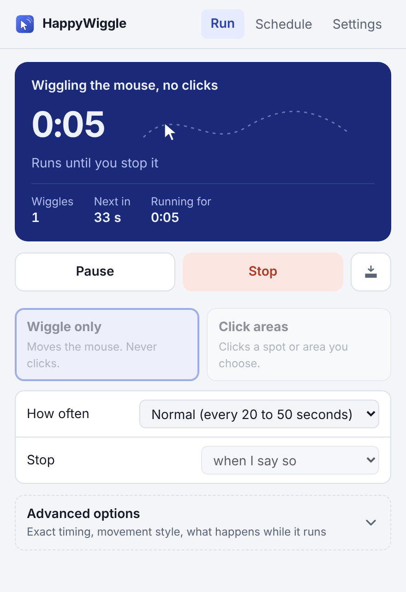
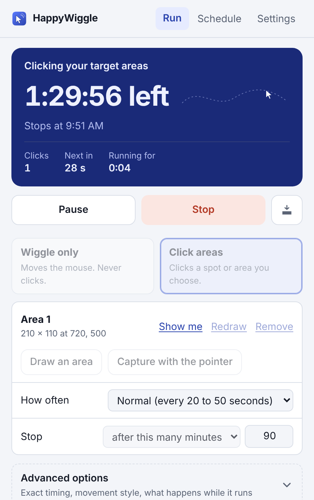
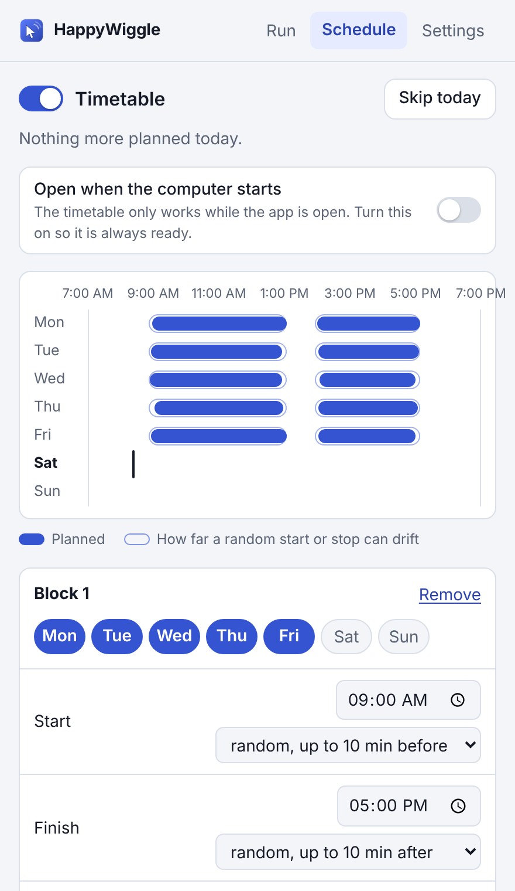
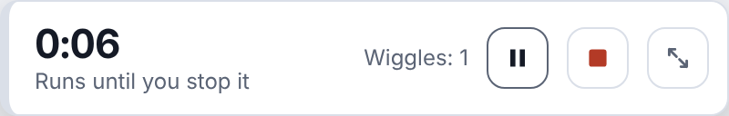
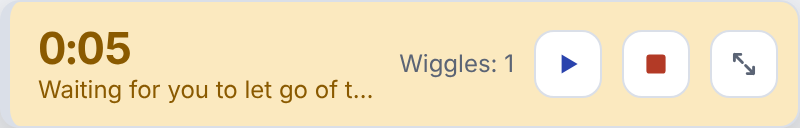

Keeps your computer awake. Then gets out of your way.
A mouse wiggler and auto clicker in one small app. Free, open source, and it never goes online.
Windows is tested. The Mac version is an early preview. Downloads are on the project's GitHub releases page.

What is HappyWiggle?
It moves your mouse a little, or clicks a harmless spot, every so often. That keeps the screen on, stops the computer going to sleep, and keeps your session from going idle while you read, watch, present or step away for a moment.
Two ways to stay active
Pick one on the main screen. You can switch whenever a session is not running.
Wiggle only
Moves the pointer in a short, curved drift and brings it back exactly where it was. It never clicks, so nothing on screen can be changed by accident.
- Nothing to set up: press Start.
- Prefer not to see it? Choose the invisible one-pixel nudge.
Click areas
Choose an exact spot, or draw a box and let it click a random point inside. Useful for apps that only count a click as activity.
- Up to five targets, at random or in turn.
- It glides there like a hand, then puts the pointer back.

Three steps, then forget about it
Choose a mode
Wiggle only, or Click areas. For clicks, draw a box over somewhere harmless: an empty part of a window where a click sends, submits and changes nothing.
Say how often and when to stop
Often, Normal or Rarely. Stop when you say so, after a number of clicks, after a number of minutes, or at a time of day.
Press Start
Or press F8 from anywhere. Touch the mouse and it waits for you. Press F8 again and it stops.
What you get
It steps aside
Touch the mouse and it waits, then carries on a few seconds after you stop. It never fights you for the pointer. On Windows it notices typing too.
It stops itself
After a number of clicks or wiggles, after a number of minutes, or at a clock time. The screen shows how long is left and when it will stop.
One key, anywhere
F8 starts and stops it whatever window is in front. You can change the key.
Random, not robotic
Every interval is picked at random inside the range you choose, and every click lands on a different point in your area.
Careful clicks
Before clicking it checks the pointer really reached the target. If it did not, it skips the click. It never clicks somewhere you did not choose.
Keeps the computer awake
Screen on and sleep off while a session runs. The moment it ends, your normal power settings are back.
Lives in the tray
Close the window and it stays in the tray or menu bar. Start, pause and stop from there.
Starts with the computer
Optional. Switch it on and the timetable works without you thinking about it.
Simple first
Three choices to get going. Exact seconds, movement style and distance sit behind "Advanced options" for those who want them.
Set a timetable once
Pick the days and hours. HappyWiggle starts and stops itself.
- One click sets up "Weekdays, 9 to 5" with a lunch break.
- Start, stop and break each drift by a few minutes, differently every day.
- "Skip today" for a day off. Stop it by hand and it stays off until the next block.
- A history shows what actually happened: when it ran, and when it waited because you were at the mouse or the computer was asleep.
It cannot wake a sleeping computer or get past a locked screen. If that happens mid-day, it carries on when you are back.



A small bar, if you prefer
Shrink the window to a slim bar that stays on top. One glance tells you how long is left and what time it stops.
- Pause, stop and expand are right there.
- It turns amber while it waits for you to let go of the mouse.
- Light and dark themes follow your computer, or choose one.
Private, and you can check
An app that moves your mouse deserves scrutiny. So everything is in the open.
The installers are built by a public script from the public code, on GitHub's machines. Anyone can read the code, and anyone can rebuild it.
- Runs entirely on your computer
- No account, no sign-in
- No analytics, no crash reports, no update pings
- Does not read your screen, files, keystrokes or messages
- Knows only the coordinates you gave it, not what is under them
- On Mac, one permission: to control the pointer
- Stop at any time with F8
How it compares
There are several ways to keep a computer active. They do different things.
| What it does | Worth knowing | |
|---|---|---|
| HappyWiggle | Real mouse movement or clicks, on a schedule you control, plus keep-awake. | Free and open source. Pauses when you use the computer. |
| Keep-awake tools | Stop the screen and computer from sleeping. | They send no input, so apps that watch for activity still see you as idle. |
| USB mouse jigglers | A gadget that pretends to be a mouse. | Costs money, has no schedule or stop rule, and cannot tell when you are back. |
| Jiggler websites | A web page that animates something. | A browser page cannot create real mouse input, so most of them do nothing useful. |
Common questions
Is it really free?
Yes. No ads, no paid version, no account. If it is useful to you, you can buy me a coffee, and that is entirely optional.
Windows shows a security warning when I install it. Why?
Windows warns about any new program it has not seen many times before. Click "More info", then "Run anyway". The warning does not appear for versions installed from the Microsoft Store.
Will it keep my status active in Teams or Slack?
HappyWiggle sends real mouse input, which is what a computer uses to decide you are there. Whether a particular chat app keeps showing you as active also depends on that app and on your organisation's settings, and we have not tested every one. Try Wiggle mode first; if an app only reacts to clicks, use Click areas on a harmless spot.
Can it click something by accident?
Wiggle mode never clicks. Click mode clicks only inside the areas you chose, and only after checking the pointer arrived there. Choose a spot where a click does nothing: an empty margin, not a button or a message list.
Use it responsibly
HappyWiggle is a tool you control. Check your employer's and IT policies before using any automation on a work or managed device, and do not use it to misrepresent whether you are working.
Free for everyone, and it stays that way
No subscription, no nag screen, no upsell. If HappyWiggle saved you some trouble, a coffee keeps new versions coming.